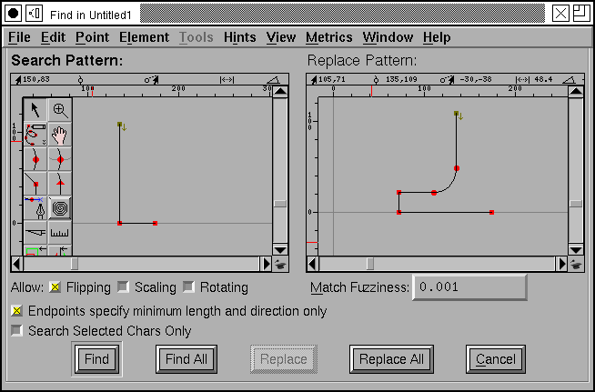
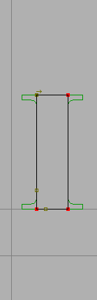

Finding shapes within glyphs¶

FontForge will allow you to search a font for all glyphs containing a certain shape and optionally replace that shape with another shape.
FontForge allows you to control whether a match will be found even if the shape has undergone certain transformations (ie. rotated, scaled, flipped, etc.).
The search will be on a point by point basis. That is, the first point of the search pattern will be moved to a point in the glyph being searched, and all subsequent points and control points in the search pattern must lie exactly on top of an equivalent point in the glyph.
Of course if a transformation is allowed, then it is the transformed search pattern which must match.
Normally FontForge will search all glyphs in a font, but you may restrict the search so that only those glyphs which are selected will be tested.
The search and replace panes behave very much like the outline glyph views and you may draw within them using the tools available in the outline view. The menu at the top of the window is a subset of the menu in the outline glyph view. Only one of the two panes is active at a given time, and the menu works on the active one. You can make a pane active by clicking in it, or by using the [Tab] key.
The [Find] button will start at the beginning of the font and search for the
first glyph containing the search pattern and then open an outline glyph view
looking at that glyph. After [Find] has been used once the button changes to
[Find Next] whose behavior is similar excepts that it starts at the last
glyph found and displays the next glyph in the same window.
The [Find All] button will select all glyphs containing the pattern.
The [Replace] button only works after a [Find]/[Find Next]/[Replace]. It
replaces the thing found with the replace pattern, and does another
[Find Next].
The [Replace All] button replaces all instances of the search pattern with
the replace pattern and selects all glyphs found.
There are three different kinds of search, and which is used depends on the
shapes in the patterns. If the search pattern contains a closed path or multiple
paths, then the search looks for an exact match, ie. for each path in the search
pattern there must be a path in the glyph which matches it exactly. Whereas, if
the search pattern is a single open path then the search will look for the
search pattern within any path. And a variant of this last– if the
[] Endpoints specify minimum length and direction only box is checked, then
the end points of the search pattern will not be matched, only the points
between them will match – This may seem rather odd, but it allows you to match
something like “all right angles” where you neither know nor care how long the
segments are on either side of the right angle.
The way a replacement happens will depend on the type of search.
In a contour search (the first type above) all matching contours will be removed, and the replacement contours will be copied in.
In a segment match the matched points will be removed from the contour and the replacement points will be added in their place. Note that the order in which you draw the two patterns is important, and the start point of the replacement will go where the start point of the search pattern came from. If you draw your patterns in the wrong direction you will not get the effect you want. Similarly, in most cases you will want the distance between the start point and end point of the search pattern to be the same as the equivalent distance in the replace pattern (else you will get odd jumps in your results).
If the endpoints of the search pattern are not explicitly matched, then the end points of the replace pattern will not be used either. The end points of the replace pattern are simply used to position the replacement. So the first point matched will correspond to the second point in the search pattern; FontForge will figure out where the first point of the search pattern would lie; it will then position the first point of the replace pattern there, and use that to figure out where the real replacement points should go. It’s hard to explain in words, but fairly obvious in a picture:
The above could be used to convert a san-serif font into a serifed one (simplifying grossly). The end point of the search pattern is the same distance from its start point as is the end point of the replace pattern. The first (only) point matched in the search pattern is the right angle point. There is no point in the replace pattern that corresponds to it, so nothing in the replace pattern can be aligned with it, but given that point we can extrapolate backwards where the start point would be, then lay a virtual replacement point on top of it, and place the other replacement points normally.
Now the end points also specify a minimum distance which must be matched. This is important because the replacement pattern also contains a right angle. You would not want FontForge recursively placing smaller and smaller serifs onto already existing ones.
At the moment I see two possible uses for the replace feature:
It can help you change the style of serifs in your font (see the example below)
FontForge can’t always detect which glyphs should contain references when reading in opentype (and some type1) fonts. You can use the replace feature to fix up all things that look like “A” with a reference to A. (see the first example above)